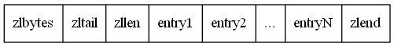
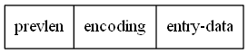

ziplist(压缩列表) 和 listNode(双端链表) 共同组成了列表的底层结构 quicklist，同时也是 哈希、有序集合 在数据量较小时的底层实现, 可以看做是一个特殊的数组， 数组中的每一项的长度不固定
ziplist在内存中是一整块的连续内存, 所有节点在内存中是紧挨着的，因此不需要和双端链表一样保存前进指针和后退指针。
相对双端链表的优点:
- 整块连续内存, 存储效率高
- 不需要前进指针和后退指针，占用内存少
缺点:
- 操作不方便，每次数据变动都会引发内存的分配和数据拷贝
ziplist 结构示意图:

| 属性 | 类型 | 长度 | 描述 |
|---|---|---|---|
| zlbytes | uint32_t | 4字节 | 保存整个压缩列表的字节长度。因此压缩列表最多有 2^32 - 1 字节 |
| zltail | uint32_t | 4字节 | 表示压缩列表表尾元素相对于压缩列表起始地址的偏移量 |
| zllen | uint16_t | 2字节 | 表示压缩列表节点的数量 如果压缩列表的长度超过2^16-1则需要遍历整个压缩列表才能知道具体长度 |
| entryX | unsigned char * | 未知 | 压缩列表节点 |
| zlend | uint8_t | 1字节 | 表示压缩列表的结尾， 永远是 0xff |
相关的宏定义1
2
3
4
5
6
7
8
9
10
11
12
13
14
15
16
17
18
19
20
21
22
23
24
25
26
27
28// 返回压缩列表的字节数
// 返回压缩列表表尾相对的压缩列表起始地址的偏移量 (zl的地址 + 4字节 就是zltail的地址)
// 列表为空时最后一个节点为0xff, 非空时为0xff前一个节点
// 返回压缩列表的长度，如果遍历一遍才能确定长度则返回 UINT16_MAX
/* 返回 ZIPLIST 头部的长度: zlbytes(4字节) + zltail(4字节) + zllen(2字节) = 10 字节*/
/* 返回 zllen 的长度 (1字节) */
/* 返回第一个 ziplist 节点的指针 */
/*
* 返回最后一个 ziplist 节点的指针
* intrev32ifbe函数为大小端转换函数，统一转换为小端存储。因为压缩列表的操作中涉及到的位运算很多，如果不统一的话会出现混乱。
*/
/* 返回ziplist表尾节点的指针
Return the pointer to the last byte of a ziplist, which is, the end of ziplist FF entry. */
ziplist节点的构成:

| 属性 | 字节数 | 说明 |
|---|---|---|
| prevlen | 1或5 | 存储前一个节点的长度, 1 < 前一个字节长度 < 254时, 为 1 字节, 否则为 5 字节 为5字节时第一字节为 0xFE, 剩下4字节存储真正的长度 如果长度大于65535, 需要遍历才能知道真正的长度 |
| encoding | 1/2/5 字节 | 记录了entry-data的类型和长度 |
| entry-data | 未知 | 节点真正的数据, encoding为小整数时 entry-data 可能不存在 |
encoding 的编码类型如下表:
| 编码 | 编码长度 | 保存的值 |
|---|---|---|
| 00pppppp | 1 byte | 高2位的00表示节点类型为0~63位的字节数组 低6位表示 entry-data 的真正长度 |
| 01pppppp qqqqqqqq | 2 bytes | 01表示类型是 长度 < 2^14 的字符数组长度 后14位保存正真的长度 |
| 10000000 qqqqqqqq rrrrrrrr ssssssss tttttttt | 5 bytes | 10表示类型是 长度 < 2^32 的字节数组 后32位保存真正的长度 |
| 11000000 | 1 bytes | int16_t 类型的整数, 只后2字节为int16_t类型的整数 |
| 11010000 | 1 bytes | int32_t 类型的整数 |
| 11100000 | 1 bytes | int64_t 类型的整数 |
| 11110000 | 1 bytes | 后3字节是24位整数, -2^24 ~ 2^23 - 1 |
| 11111110 | 1 bytes | 8 位整数 -128 ~ 127 |
| 1111xxxx | 1 bytes | xxxx 在0001~1101之间, 表示 0~12 之间的整数, 拿到xxxx后还要减1才是真正表示的值 此类型没有 entry-data, 整数的值直接保存在低4位 |
| 11111111 | 1 bytes | ziplist结尾字符 |
encoding 相关的宏定义如下:
1 |
压缩列表的创建于增删改查
创建一个空的 ziplist
1 | /* Create a new empty ziplist. */ |
压缩列表插入新节点
插入新元素分为三步:
- 将元素内容编码
- 重新分配空间
- 复制数据
插入新节点用到的函数以及宏定义
1 | /* 设置 prevlensize 变量为 ptr 指向的节点的 prevlen 属性的字节长度(编码前一节点所需的字节数) */ |
插入新节点函数
1 | /* Insert item at "p". |
连锁更新：
insert, delete, merge 都可能会引发连锁更新
1 | unsigned char *__ziplistCascadeUpdate(unsigned char *zl, unsigned char *p) { |
参考链接: